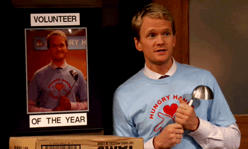

SERVICE INFORMATION
- Service, Awareness, and Integration Club (2016-current): An ECG club in which participation
of monthly service activities occur.
- Greensboro Urban Ministry food pantry (2014-current):Helped cook food, set up tables, and
check people in.
- High Point Regional Hospital: Oncology & Radiation and Patient Discharge (2018): Shadowed
radiotion oncologists and surgical oncologists, while interacting with patients and learning about various
oncological technologies.
- Hot Dishes and Hope First Presbyterian Church Greensboro (2018-current): Helped cook and
serve food, set up tables, and check people in.
- Dance Choreographer (2016-current): Bharatanatyam and Bollywood for Indo-American Society
of North Carolina

Home Resume Page
Leadership Information
Scholar Information
Skills and Hobbies